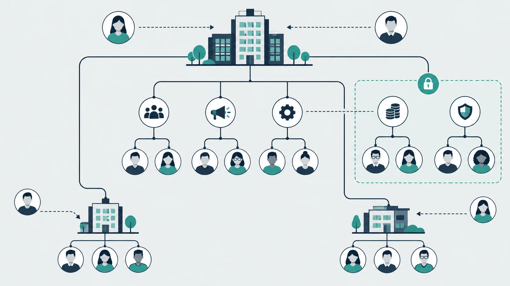

Articles
来自飞函的文章、实践与思考。
关于沟通、协作，以及更好的工作方式。
临时拉会后，如何让会议结论接上后续任务
临时会议结束后，讨论结论常散落在会议聊天中。本文从会中记录、会后确认和任务交接三个环节，说明团队如何让决定有出处、任务有负责人、变更有回音。
阅读全文全部文章
13 篇临时拉会后，如何让会议结论接上后续任务
临时会议结束后，讨论结论常散落在会议聊天中。本文从会中记录、会后确认和任务交接三个环节，说明团队如何让决定有出处、任务有负责人、变更有回音。
阅读全文内网敏感会议：主持人权限与会议锁定各管什么
研发团队在内网讨论敏感方案时，主持人权限用于管理会议过程，会议锁定用于收紧参会入口。两者配合，还需落实名单核对与材料管理。
阅读全文薪酬资料协作：通讯录与文件权限如何配合
以薪酬核算、复核和发放为例，说明人资如何分别设置通讯录可见范围与文件共享权限，并在岗位变动时核查和回收访问权限。
阅读全文研发评审中反复转发图纸，如何缩小接收范围并保留讨论依据
从图纸版本、接收权限和评审结论入手，梳理研发团队如何减少文件反复转发，并让讨论始终对应明确的图纸版本。
阅读全文资料审阅何时用屏幕水印？如何减少干扰
以跨部门审稿、限时评审和远程查阅为例，说明屏幕水印的适用边界，并给出管理员控制启用范围、检查阅读体验和定期复盘的方法。
阅读全文只允许办公网络访问协同平台，IP限制会给外勤团队带来什么影响
以外勤人员现场处理客户问题为例，分析办公网络 IP 限制如何影响消息、文件和协作时效，并提出兼顾访问控制与现场工作的接入思路。
阅读全文出差设备遗失后，企业如何评估远程数据擦除与设备授权机制
以出差设备遗失为场景，梳理企业评估设备授权、远程数据擦除和处置记录的关键问题，并说明如何验证飞函相关能力的实际适用范围。
阅读全文共用值班账号的追责盲区与身份规范
从值班交接场景梳理共用账号造成的身份、操作和交接记录断点，并给出个人身份登录、权限管理与审计留痕的落地方法。
阅读全文员工临时借调，协同权限如何随岗调整
员工临时借调时，协同权限应围绕借调任务、期限和审批责任调整。本文以跨部门项目为例，说明如何梳理原岗位权限、开放必要资源，并在借调结束时逐项回收。
阅读全文集团通讯录该对谁开放？权限边界怎么定
跨部门找人需要效率，敏感岗位需要保护。本文从可见范围、联系入口和岗位变动三个环节，讨论集团通讯录的权限取舍与落地方法。
阅读全文
新成员加入项目群后，如何快速补齐决策背景和历史讨论
新成员进群后，怎样从历史讨论中找到真正影响工作的决策？本文提供一套按结论、依据、分歧和待办梳理项目背景的方法，并说明如何借助飞函承接消息与资料。
阅读全文跨部门问题追了几轮，如何留下可检索的结论
跨部门问题反复追问，往往是讨论、依据和最终决定散落在不同对话中。本文从问题编号、结论回写、检索入口和权限边界入手，说明如何让沟通记录真正服务于后续协作。
阅读全文一线员工每天收到大量通知，哪些事项值得设为重要消息
从是否需要立即行动、延误后果和责任归属出发，梳理一线团队设置重要消息的判断标准，以及发送、确认和跟进的做法。
阅读全文